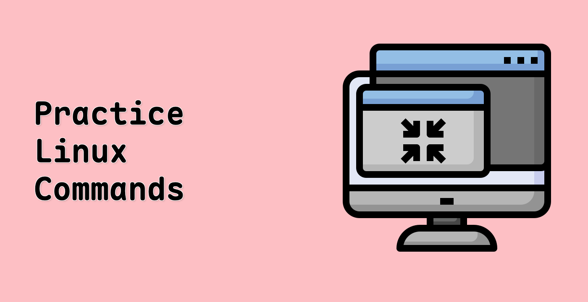

Linux Learning Resources
Welcome to your comprehensive guide to Linux! From basic commands to advanced system administration, find everything you need to master Linux.
📚 Learning Resources
📹 Video Tutorials

📖 Study Materials
ğŸ› ï¸ Practice Tools
Virtual Machines
- 🔧 VirtualBox - VM Platform
- 🔧 VMware - Professional VM
- 🔧 QEMU - System Emulator
Development Tools
🔒 Linux Security
Security Tools
- 🔠Kali Linux Tools - Security Suite
- 🔠OpenSSH - Secure Shell
- 🔠SELinux - Security Module
Security Practices
📚 Linux Certifications
Entry Level
- 📜 LPIC-1 - Linux Professional
- 📜 Linux+ - CompTIA
- 📜 RHCSA - Red Hat
Advanced Level
- 📜 LPIC-2 - Advanced Linux
- 📜 RHCE - Red Hat
- 📜 LPIC-3 - Enterprise Linux
🛡️ Linux Labs & Practice
Practice Platforms
- 🯠OverTheWire - Linux Wargames
- 🯠HackerRank - Shell Challenges
- 🯠CodeWars - Shell Practice
Learning Environments
- 🆠Linux Journey - Interactive Learning
- 🆠Linux Survival - Basic Commands
- 🆠Codecademy - Command Line